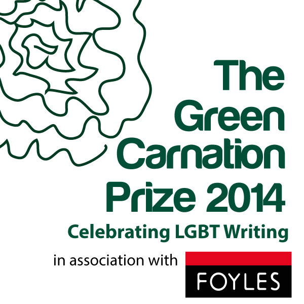

Foyles, National Bookseller of the Year 2013 and 2012, has today, Thursday 5th June, announced its two year partnership with the Green Carnation Prize for writing.

The Green Carnation Prize is a prize awarded to LGBT writers for any form of the written word, and has a reputation of championing LGBT writers from the UK. This year will see the growth of the prize, to encompass works of translation, which only can be encouraged by a partnership with Foyles. The partnership will see Foyles offer event space in their new flagship shop to host the award ceremony and public events celebrating the prize, with Simon Heafield Communications Manager at Foyles on the judging panel, the full line up of judges will be announced next week. On joining the panel and the prize Simon Heafield said:
“As a bookshop Foyles is very committed to showcasing the wonderfully diverse world of literature, we’re proud to be supporting the Green Carnation Prize. In its short history, the Prize has already established itself as a dependable marque of quality, bringing new readers to books that really deserve to be more widely known. Among the many literary prizes that have done little to move with the times, the Green Carnation stands out as one destined to become one of the highlights of the literary calendar.”
Simon Savidge, Honorary Director and co-founder of the Green Carnation said:
“I am beyond delighted that the Green Carnation Prize is to be in association with Foyles in 2014 and 2015 bringing you the best LGBT writing published in the UK. Both parties have a clear vision to bring readers the best published LGBT writing available in the UK both in print and in person, with some great events celebrating long listed authors and winners past and future plus LGBT’s literary history which is sometimes forgotten, it is a very exciting time for the prize.”
For more information please visit: www.foyles.co.uk or www.greencarnationprize.com